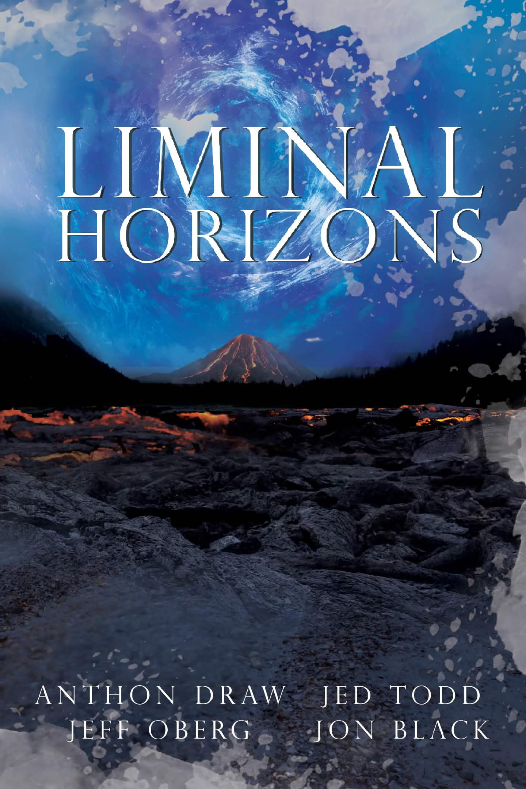
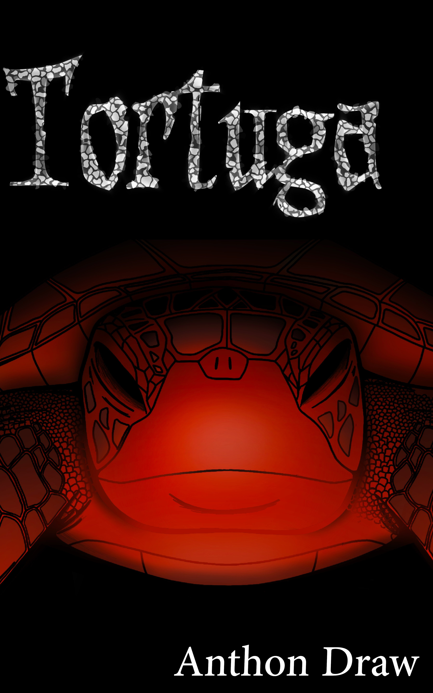
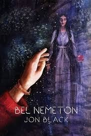
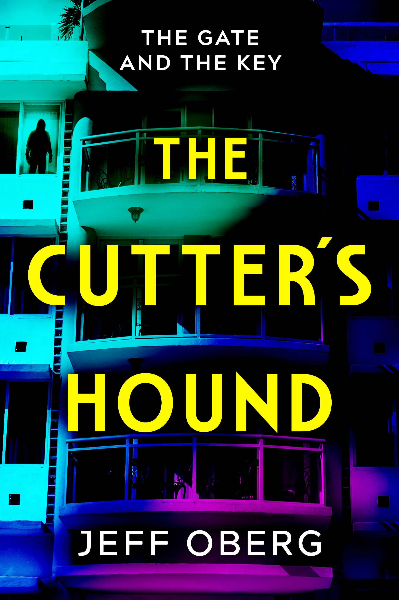

Liminal Horizons is a groundbreaking anthology that brings together captivating narratives from our talented authors. Each story plays with the boundaries of reality, exploring themes of space, identity, and the unknown. Readers can expect a blend of hard sci-fi and horror, horror both cosmic and folk. This collection is designed for those craving fresh perspectives and thrilling escapism. Get ready to immerse yourself in a journey through the cosmos and the darker corners of imagination. Available now on Amazon, Kobo, & Google Play.
Liminal Horizons as a series is about exploring beyond the walls that bind us and breaking the borders of the “proper” world to find the one that is right for us. This first anthology brings us home and shares the many reasons it isn’t the place we expect to find. We discarded and lost a lot along the way, and it often made the journey lighter and easier. There are monsters back among our discards. It’s probably best to let them lie.
The monsters around us aren’t always the greatest danger. Mostly, the danger lies within us. If we’re careful and a bit lucky, we can draw that monster out and build a better home for those that come after. What we can never do, though, is just slay the beast and come home victorious. In the end, we’re poor ghost-hunters. Maybe making friends with our own ghosts is what will keep us going. That lesson is what unites these four disparate visions of what lies beyond our Liminal Horizons…
Herbivore by Anthon Draw — Five strangers converge on a paradise resort in the South Pacific, as the depths split open. A turtle the size of a stadium drags itself ashore, leaving destruction and loss in its wake. This interwoven survivors’ narrative reveals the human response to a disaster so vast it leaves a permanent mark on every life it touches.
Hole in the Bucket by N. Jed Todd — A child soldier grown old and gray fighting for something he never believed in, Beckett wanted nothing more than coming home and laying to rest his ghosts. But the past can be just as haunting, and sometimes putting a child to bed takes working with spirits against the real threats.
A Scandal in Hollywood by Jon Black — Basil Rathbone looks to hang up his Sherlock Holmes’ deerstalker for good, but the ghost of the Great Detective isn’t done with him yet. To save the city, he’ll have to take on the role like never before.
Shadow of the Mountain by Jeff Oberg — Traveling through Appalachia in search of the best barbecue pig, Akowo and Trick find instead the ghost of a tortured, forgotten soldier. They will learn not only do the dead haunt; some spirits in need of exorcism walk among the living…

A behemoth rises from beneath the Pacific island of Nakatago, where it has been lying dormant since before recorded history. The beast wipes out an entire village and its inhabitants. But there are survivors, eyewitnesses who claim to have seen an unimaginably large reptile ascend from beneath the ground itself and swim off into the ocean’s depths. But who will believe the word of two missionaries and a primitive fisherman? Who will take seriously this new discovery? And who will determine whether it is a threat or a miracle?
From Matt Pearson, evangelist and survivor of the event on Nakatago Island. To Ekewaka, a Pacific Islander who tries to respect all beings and live by the ways of the Pacific’s ancient wave riders. To the man only known as Grill, a resourceful trapper and hunter who wants a literal taste of the largest creature ever to exist on the planet. They and many others find their lives have been upended in collision with each other beneath the shadow of a world-changing event. Coming in June 2026.

UNCOVERING MERLIN’S TOMB
A globe-trotting quest for the treasures of the historical Merlin.
From the Preditors and Editors Readers’ Poll Award-Winning Author Jon Black…
Carvings have been unearthed in the Middle East. They bear impossible names--Arthur and Merlin, albeit in a native transliteration. How did these names come so far? Do they imply the existence of a historical Arthur and Merlin? The scholars do what they always do. They arrange a press meeting.
But scholars aren’t the only attendees. After heavily-armed mercenaries steal the stone, Dr. Vivian Cuinnsey is forced to work with Jake Booker, a self-professed treasure hunter. Can he be trusted? Or is he just one more force after Merlin’s treasure for personal profit?
From the Middle East to the caves of Israel to German record rooms to Oxford’s secret underworld, chase Vivian and Jake in their pursuit of Merlin’s greatest treasure. Coming in summer 2026.
Winston was a soldier without any mission left. Fighting in a war not his own, he had been traded to the enemy for the sake of peace and given experimental neuroconditioning to guarantee he could never fight again. But never is a very long time…
His daughter needed him to fight the war he’d lost once already, but now for her sake. This was a battle he couldn’t afford to lose. Who would he sacrifice along the way? Coming in July 2026.

The further adventures of Trick and Val as they battle supernatural horrors while still keeping the restaurant going. Coming in August 2026.